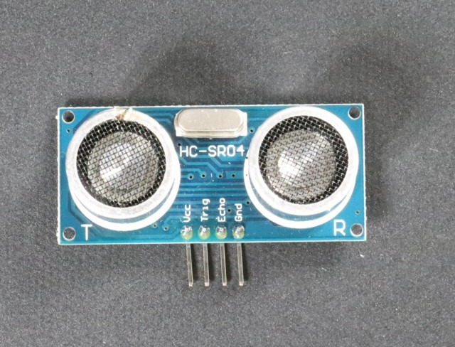
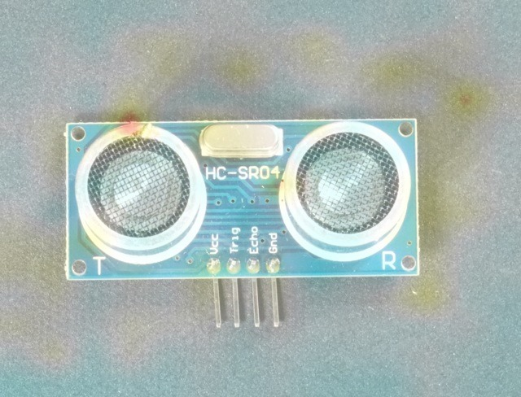

Previously measured VisA example. No live inference runs on this website.
VisA · Zou et al., ECCV 2022 · CC BY 4.0 · resized images and model overlay. Dataset source
id
a6226ef392eb417e8991369e890d816b
created_at
2026-10-16T03:37:21.911121+00:00
category
pcb1
verdict
Anomalous
score
0.09611436724662781
threshold
0.047802507877349854
uncertainty_margin
0.0023901253938674928
inference_ms
38.44
model_id
dinov3-normal-bank-pcb1-v1
Image and measured heatmap


Recorded evidence conversation
What does this inspection heatmap show?
The map uses a 14 by 14 patch grid for localization, not for identifying specific defects or diagnosing them. [screening-4]
How does that map relate to anomaly scoring?
A larger anomaly score indicates a larger feature distance; the score is not a defect probability. [screening-2]
Retrieved source passages
screening-4 · DefectRAG v2 screening and evidence policy
# Current detector heatmap
The current DefectRAG detector uses a frozen DINOv3 encoder and a nearest-normal memory bank. Its heatmap displays the cosine distance between each image patch feature and its closest stored normal patch feature. Larger distances mean a larger departure from the reference appearance. The map interpolates a 14 by 14 patch grid; it is coarse localization, not a verified defect segmentation or a named defect diagnosis. This detector does not reconstruct image features with a trained decoder. General Dinomaly reconstruction documentation describes a different method.
project://docs/inspection-policy
screening-5 · DefectRAG v2 screening and evidence policy
# Evidence limits and response
The system does not predict specific defect types, component counts, root causes, process parameters, acceptance tolerances or repair instructions. Those require additional validated supervision or approved process records. Model failures create an error event, never a successful inspection. Anomaly and uncertain events create local review alerts. Review source images and heatmaps before acting. Product category is selected by the operator; arbitrary or wrong-product uploads are outside validated scope. Documentation is general context and must remain separate from image measurements.
project://docs/inspection-policy
screening-2 · DefectRAG v2 screening and evidence policy
# Reading an inspection
DefectRAG compares an uploaded image with normal VisA reference features for the selected product. A larger anomaly score indicates a larger feature distance; the score is not a defect probability. Good means the score lies below the validated decision threshold and outside the review band. Anomalous means it lies above the threshold and outside the review band. Uncertain means it lies within a fixed five-percent band around the threshold. This review band is an operational heuristic, not calibrated statistical confidence. A Good result is screening evidence, not proof that a product is safe or meets a factory specification.